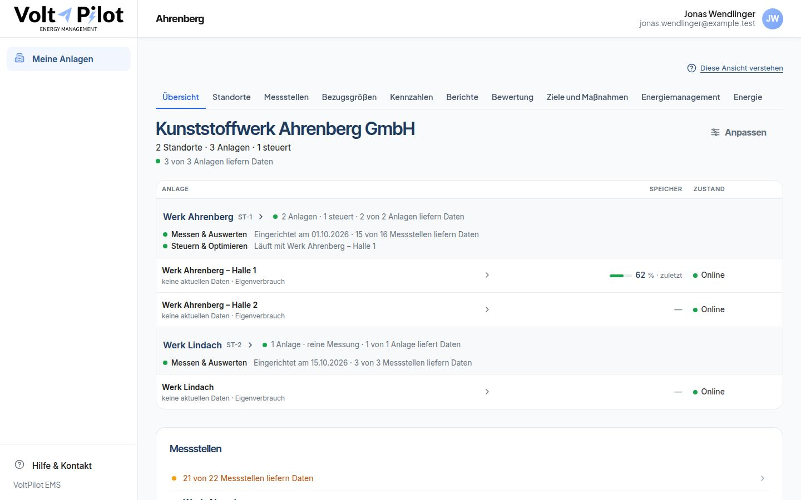

B1
Zehn gleichrangige Reiter am Unternehmen
Am Rechner stehen nebeneinander: Übersicht · Standorte · Messstellen · Bezugsgrößen · Kennzahlen · Berichte · Bewertung · Ziele und Maßnahmen · Energiemanagement · Energie. Die Reihenfolge folgt keiner Aufgabe. „Energie“ und „Energiemanagement“ stehen nebeneinander und meinen Verschiedenes.
Am Telefon ist das in diesem Branch gelöst (Gruppen, siehe Schon umgesetzt), am Rechner noch nicht.
